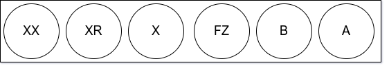

Priority Queues
1 Priority Queues (PQ)
1.1 ¿Que es una PQ?
Es un tipo de dato abstracto (ADT) que opera en forma similar a una cola, excepto que cada elemento tiene cierta prioridad. Esta prioridad define en que orden los elementos son removidos de la cola.
Las colas de prioridad solo soportan datos comparables, de modo que estos puedan ser ordenados de una manera u otra.
Suponga que todos los siguientes valores son insertados en una PQ con un orden dado por los números, en este caso de menor a mayor.
poll() sacamos de la cola al elemento de mayor prioridad.
add(2) agregamos 2 a la cola.
poll().
La maquina sabe cual es el orden de los elementos usando un heap
1.1.1 ¿Que es un heap?
Un heap es una estructura de datos basada en árboles que se basa en lo siguiente.
Si A es un nodo pariente de B entonces A esta ordenada con respecto de B para todos los nodos A, B en el heap.
Estos son Heaps binarios, ya que cada nodo solo va a tener dos ramas.
1.1.2 ¿Cuándo y dónde son usadas las PQ?
- Usadas en ciertas implementaciones de el algoritmo de el camino más corto de Dijkstra
- Cada vez que necesites buscar el sigiente mejor o el siguiente peor elemento
- Usado en codificación de Huffman (el cuál es usado para compresión de datos sin perdida)
- Usado en algoritmos de Best First Search (BFS) como A* que usa PQ para agarrar continuamente el nodo próximo mas prometedor.
- Usado para algoritmos de Minimum Spanning Tree (MST).
1.1.3 Análisis de complejidad
| Binary Heap Construction | \(O(n)\) |
|---|---|
| Polling | \(O(log(n))\) |
| Peeking | \(O(1)\) |
| Adding | \(O(log(n))\) |
| Naive Removing | \(O(n)\) |
| Advanced removing with help from a hash table* | \(O(log(n))\) |
| Naive contains | \(O(n)\) |
| Contains check with help of a hash table* | \(O(1)\) |
/* Usado una tabla de hash para ayudar a optimizar estas operaciones toma tiempo lineal.
1.1.4 ¿Cómo convertir una Min PQ en una Max PQ?
A veces las librerías estándar de la mayoría de los lenguajes de programación solo proveen una Min PQ que ordena los elementos desde el elemento con menos prioridad.
Desde que los elementos en una PQ son comparables, seguramente fue implementada alguna interfaz para comparar los elementos que podemos simplemente negar para producir un Max Heap.
Sean \(x, y\) números en la PQ. Para un min PQ, Si \(x <= y\) entonces \(x\) sale de la PQ antes que \(y\) así que lo contrario a esto es que si \(x >= y\) entonces \(y\) viene despues de \(x\).

Un método alternativo para números es negar los números mientras los insertas en la PQ y despues negarlos otra vez cuando salgan.


Supongamos que
lexes un comparador para strings que soporta strings en orden lexicografíco (el estándar en la mayoria de los lenguajes de programación). Entoncesnlexes la negación delexy \(`s_1, s_2`\) sean strings.
lex (s1, s2) = -1 if s1 < s2 lexicographically lex (s1, s2) = 0 if s1 = s2 lexicographically lex (s1, s2) = +1 if s1 > s2 lexicographically nlex (s1, s2) = -(-1) = +1 s1 < s2 lexicographically nlex (s1, s2) = -(0) = 0 s1 = s2 lexicographically nlex (s1, s2) = -(+1) = -1 s1 > s2 lexicographically
Añadiendo todos estos string a la derecha de la PQ con el comparador
lex obtenemos lo siguiente.


Añadiendo todos estos string a la derecha de la PQ con el operador
nlex, obtenemos lo contrario.

- Añadir elementos a una Heap binaria
Priority queues (PQ) son usualmente implementadas con heaps, porque dan el mejor resultado en complejidad de tiempo.
Una PQ es un Abstract Data Type (ADT), desde que usando heaps no es la única manera de implementar PQs. Como ejemplo, Se podria usar una lista no ordenada pero no nos daria la los mejores resultados en terminos de complejidad del tiempo.
Hay muchos tipos de heaps que se pueden utilizar para implementar una PQ:
- Binary Heap
- Fibonacci Heap
- Binomial Heap
- Pairing Heap
- Etc.
- Binary Heap
Una heap binaria es un árbol binario que soporta la variante heap. En este árbol cada nodo tiene como máximo dos nodos hijos.
Un árbol binario completo es un árbol en el cúal cada nivel, exepto problablemente el último está lleno completamente y los nodos hijos estan llenos hasta la derecha.
Sea \(i\) el índice del nodo padre (basado en cero):
- Índice del nodo hijo de la izquierda: \(2i + 1\)
- Índice del nodo hijo de la derecha: \(2i + 2\)

- Añadiendo Elementos a una Heap binaria
Sea la Heap binaria:

Insert(1)
Debido a que esta es una Min Heap tenemos que acomodoar los nodos de nuevo, intercambiando el nodo padre por el hijo si este es mayor haciendolo de manera recursiva.


Insert(13)

- Remover elementos de una Heap binaria
Poll()polling, haciendo esto eliminamos el primer nodo y lo intercambiamos por el último, siguendo las propiedades de la heap.

Remove(12)Buscamos 12 haciendo un escaneo lineal por todoss los elementos hasta que encontramos el número 12.

- Polling - \(O(log(n))\)
- Removing - \(O(n)\) - Hay una manera más eficiente de hacerlo
- Remover elementos de una heap binaria en tiempo logaritmico
La inieficiencia de el anterior algoritmo para remover elementos de la heap viene del hecho de que tenemos que hacer una busqueda lineal (llendo de uno por uno) para buscar en dónde está indexado el elemento en cuestión. La solución es buscarlo haciendo uso de una hashtable Tabla de hash Para buscar en que nodo esta indexado.
Problema: ¿Que pasa si hay dos nodos con el mismo valor?
En vez de mapear un valor con una posición, mapearemos un valor a múltiples posiciones. Podemos mantener un Set o un Tree Set de índices para un nodo particual y el valor (o llave) al que es mapeado.
insert(3)


remove(2)que sería igual a hacer unpoll()


1.2 Implementación en código
/** * A min priority queue implementation using a binary heap. * * @author William Fiset, william.alexandre.fiset@gmail.com */ package com.williamfiset.algorithms.datastructures.priorityqueue; import java.util.ArrayList; import java.util.Collection; import java.util.List; public class BinaryHeap<T extends Comparable<T>> { // A dynamic list to track the elements inside the heap private List<T> heap = null; // Construct and initially empty priority queue public BinaryHeap() { this(1); } // Construct a priority queue with an initial capacity public BinaryHeap(int sz) { heap = new ArrayList<>(sz); } // Construct a priority queue using heapify in O(n) time, a great explanation can be found at: // http://www.cs.umd.edu/~meesh/351/mount/lectures/lect14-heapsort-analysis-part.pdf public BinaryHeap(T[] elems) { int heapSize = elems.length; heap = new ArrayList<T>(heapSize); // Place all element in heap for (int i = 0; i < heapSize; i++) heap.add(elems[i]); // Heapify process, O(n) for (int i = Math.max(0, (heapSize / 2) - 1); i >= 0; i--) sink(i); } // Priority queue construction, O(n) public BinaryHeap(Collection<T> elems) { int heapSize = elems.size(); heap = new ArrayList<T>(heapSize); // Add all elements of the given collection to the heap heap.addAll(elems); // Heapify process, O(n) for (int i = Math.max(0, (heapSize / 2) - 1); i >= 0; i--) sink(i); } // Returns true/false depending on if the priority queue is empty public boolean isEmpty() { return size() == 0; } // Clears everything inside the heap, O(n) public void clear() { heap.clear(); } // Return the size of the heap public int size() { return heap.size(); } // Returns the value of the element with the lowest // priority in this priority queue. If the priority // queue is empty null is returned. public T peek() { if (isEmpty()) return null; return heap.get(0); } // Removes the root of the heap, O(log(n)) public T poll() { return removeAt(0); } // Test if an element is in heap, O(n) public boolean contains(T elem) { // Linear scan to check containment for (int i = 0; i < size(); i++) if (heap.get(i).equals(elem)) return true; return false; } // Adds an element to the priority queue, the // element must not be null, O(log(n)) public void add(T elem) { if (elem == null) throw new IllegalArgumentException(); heap.add(elem); int indexOfLastElem = size() - 1; swim(indexOfLastElem); } // Tests if the value of node i <= node j // This method assumes i & j are valid indices, O(1) private boolean less(int i, int j) { T node1 = heap.get(i); T node2 = heap.get(j); return node1.compareTo(node2) <= 0; } // Perform bottom up node swim, O(log(n)) private void swim(int k) { // Grab the index of the next parent node WRT to k int parent = (k - 1) / 2; // Keep swimming while we have not reached the // root and while we're less than our parent. while (k > 0 && less(k, parent)) { // Exchange k with the parent swap(parent, k); k = parent; // Grab the index of the next parent node WRT to k parent = (k - 1) / 2; } } // Top down node sink, O(log(n)) private void sink(int k) { int heapSize = size(); while (true) { int left = 2 * k + 1; // Left node int right = 2 * k + 2; // Right node int smallest = left; // Assume left is the smallest node of the two children // Find which is smaller left or right // If right is smaller set smallest to be right if (right < heapSize && less(right, left)) smallest = right; // Stop if we're outside the bounds of the tree // or stop early if we cannot sink k anymore if (left >= heapSize || less(k, smallest)) break; // Move down the tree following the smallest node swap(smallest, k); k = smallest; } } // Swap two nodes. Assumes i & j are valid, O(1) private void swapint (i, int j) { T elem_i = heap.get(i); T elem_j = heap.get(j); heap.set(i, elem_j); heap.set(j, elem_i); } // Removes a particular element in the heap, O(n) public boolean remove(T element) { if (element == null) return false; // Linear removal via search, O(n) for (int i = 0; i < size(); i++) { if (element.equals(heap.get(i))) { removeAt(i); return true; } } return false; } // Removes a node at particular index, O(log(n)) private T removeAt(int i) { if (isEmpty()) return null; int indexOfLastElem = size() - 1; T removed_data = heap.get(i); swap(i, indexOfLastElem); // Obliterate the value heap.remove(indexOfLastElem); // Check if the last element was removed if (i == indexOfLastElem) return removed_data; T elem = heap.get(i); // Try sinking element sink(i); // If sinking did not work try swimming if (heap.get(i).equals(elem)) swim(i); return removed_data; } // Recursively checks if this heap is a min heap // This method is just for testing purposes to make // sure the heap invariant is still being maintained // Called this method with k=0 to start at the root public boolean isMinHeap(int k) { // If we are outside the bounds of the heap return true int heapSize = size(); if (k >= heapSize) return true; int left = 2 * k + 1; int right = 2 * k + 2; // Make sure that the current node k is less than // both of its children left, and right if they exist // return false otherwise to indicate an invalid heap if (left < heapSize && !less(k, left)) return false; if (right < heapSize && !less(k, right)) return false; // Recurse on both children to make sure they're also valid heaps return isMinHeap(left) && isMinHeap(right); } @Override public String toString() { return heap.toString(); } }